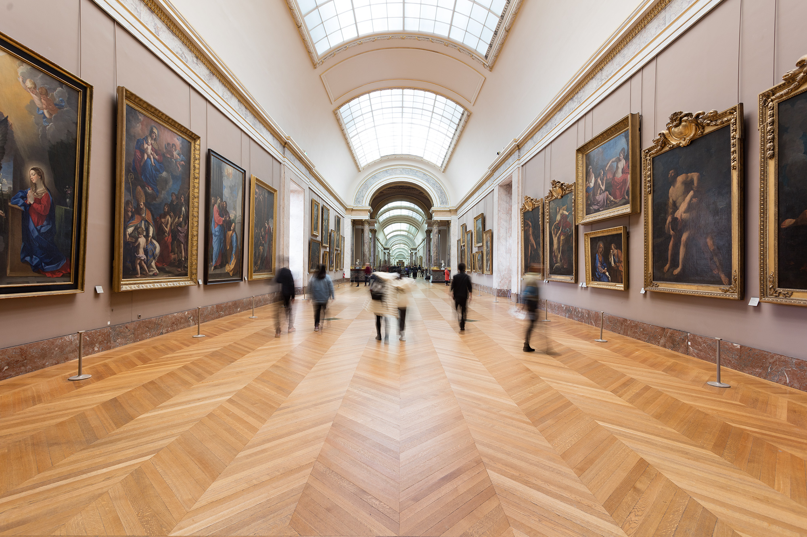
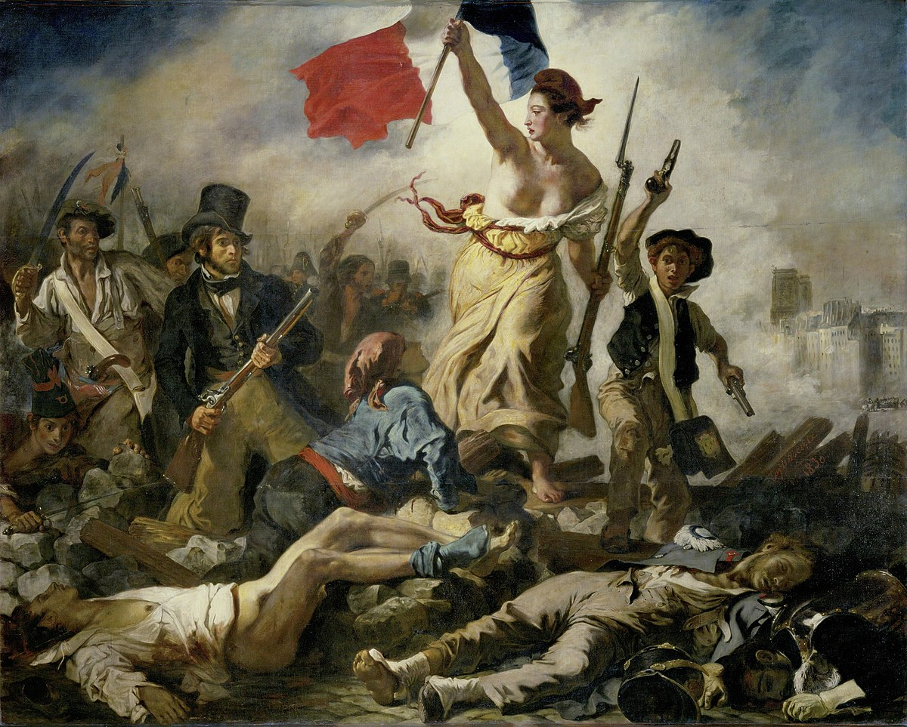
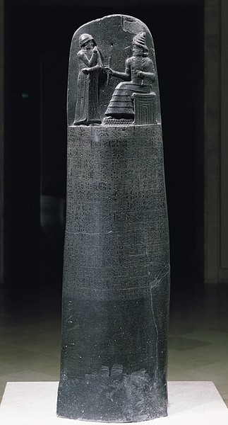
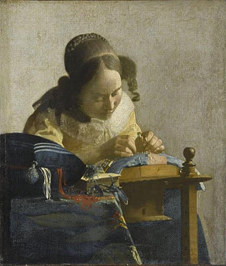
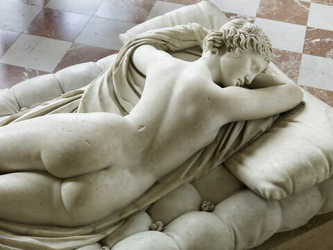
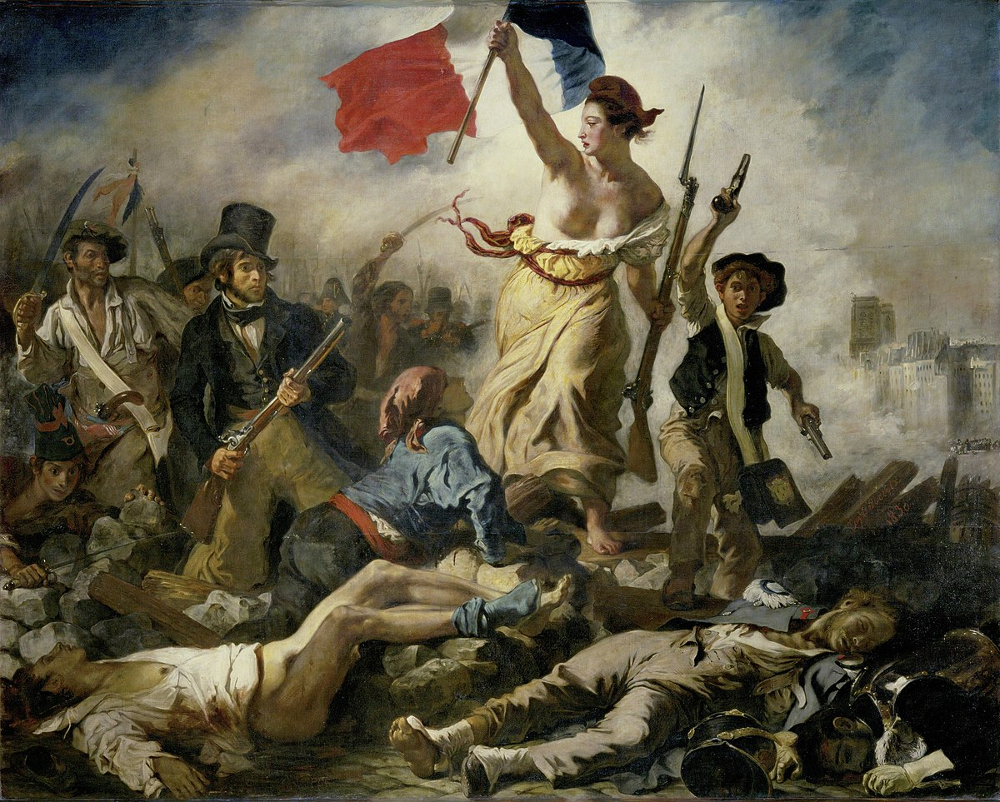
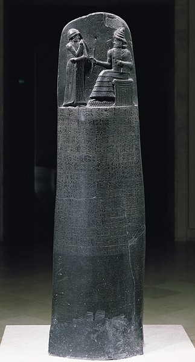
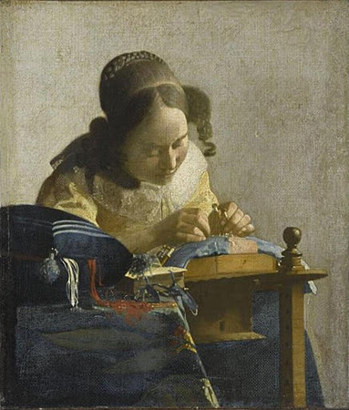
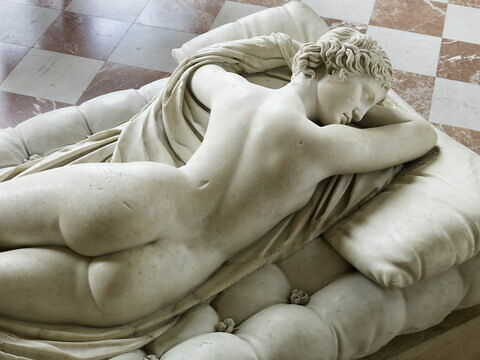

Louvre
Scroll Down


The Louvre Museum
The Louvre Museum, located in Paris, France, is one of the world's largest and most famous art
museums.
Originally built as a fortress in the late 12th century under Philip II, the Louvre was transformed
into
a royal palace in the 16th century before becoming a public museum during the French Revolution in
1793.
With a sprawling complex of nearly 783,000 square feet, the museum is home to more than 38,000
objects
from prehistory to the 21st century, showcasing a rich tapestry of human culture and history.
The Louvre's collections are divided among eight curatorial departments: Near Eastern Antiquities;
Egyptian Antiquities; Greek, Etruscan, and Roman Antiquities; Islamic Art; Sculptures; Decorative
Arts;
Paintings; and Prints and Drawings. Among its many treasures, the Louvre houses some of the most
iconic
works of art, including the Mona Lisa by Leonardo da Vinci, the Venus de Milo, and the Winged
Victory of
Samothrace.
The museum's iconic glass pyramid, designed by architect I.M. Pei and inaugurated in 1989, serves as
the
main entrance and has become a symbol of the Louvre's blend of historical architecture with modern
innovation. The Louvre is not just a repository of art but a testament to the evolution of human
creativity and a focal point for cultural exchange and learning. It attracts millions of visitors
from
around the world each year, making it one of the most visited art museums globally.
Collections



 







Paris
the City of Romance
Paris, the capital and most populous city of France, is globally renowned for its art, fashion,
gastronomy, and culture. Its 19th-century cityscape is crisscrossed by wide boulevards and the River
Seine, and is marked by landmarks like the Eiffel Tower, Notre-Dame Cathedral, and the 12th-century,
Gothic Sainte-Chapelle. The city is also known for its cafe culture and the bookshops lining the Seine’s
Left Bank.
Founded in the 3rd century BC by a Celtic people called the Parisii, the city has been a major center of
finance, diplomacy, commerce, fashion, science, and the arts for many centuries. Paris is often referred
to as "The City of Light" (La Ville Lumière), a title it owes both to its leading role during the Age of
Enlightenment and to its early adoption of street lighting.
Paris houses several of the world's most important museums and art galleries, with the Louvre being the
most visited art museum in the world. Other significant cultural landmarks include the Musée d'Orsay and
the Musée de l'Orangerie, known for their impressive collections of French Impressionist art, and the
Pompidou Centre, celebrated for its collection of modern and contemporary art.
The city's educational and research institutions continue to contribute to its status as a global hub
for higher education and research. Paris is also a major international air transport hub with the
Charles de Gaulle Airport being one of the busiest in the world.
Paris's influence in politics, education, entertainment, media, fashion, science, and the arts all
contribute to its status as one of the world's major global cities. Moreover, Paris is known for its
annual fashion weeks which are significant events for the global fashion industry. With its rich
history, cultural heritage, and vibrant contemporary scene, Paris continues to captivate millions of
visitors each year, making it one of the most visited cities in the world.